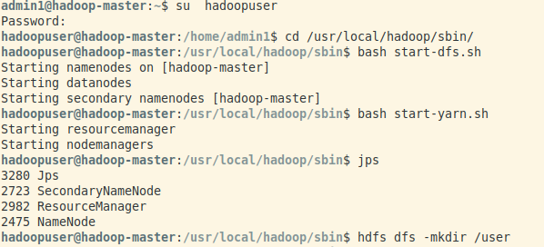
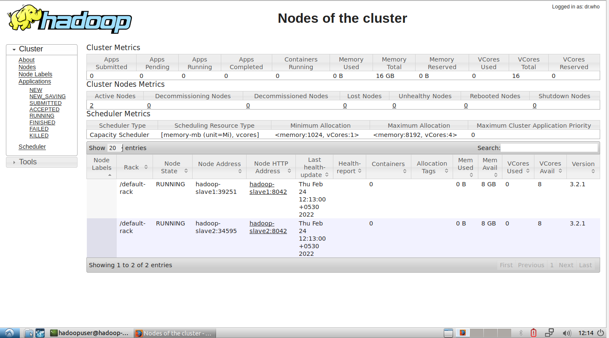
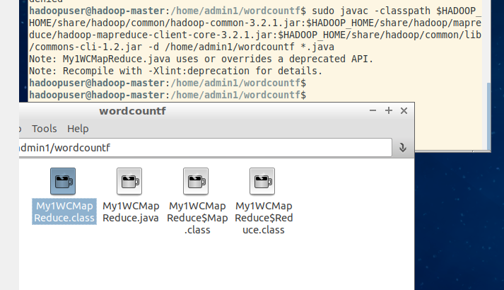
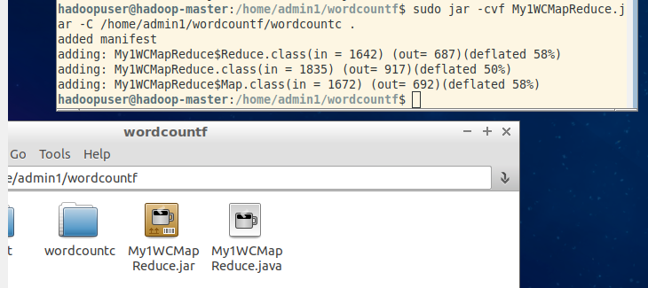
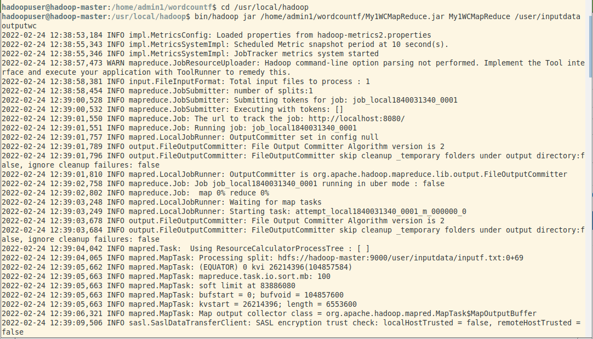
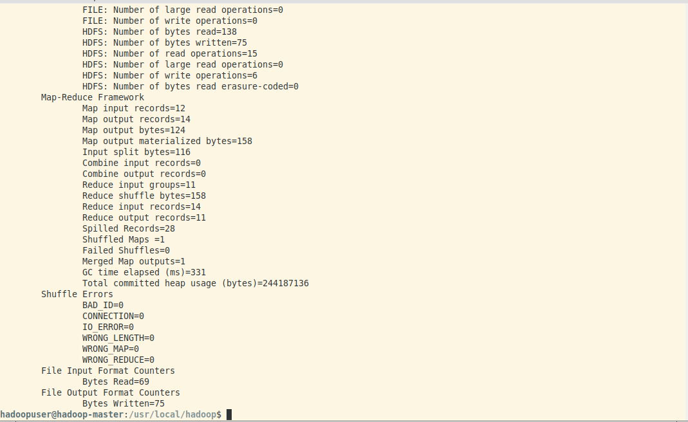
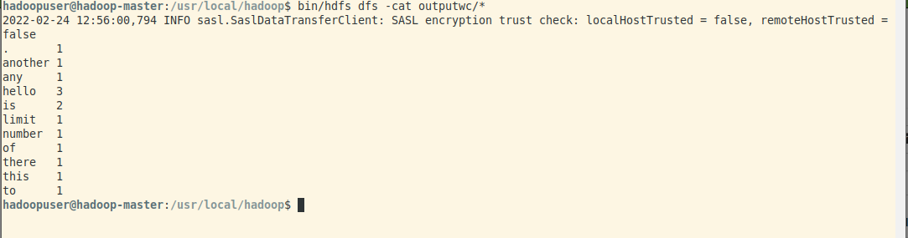
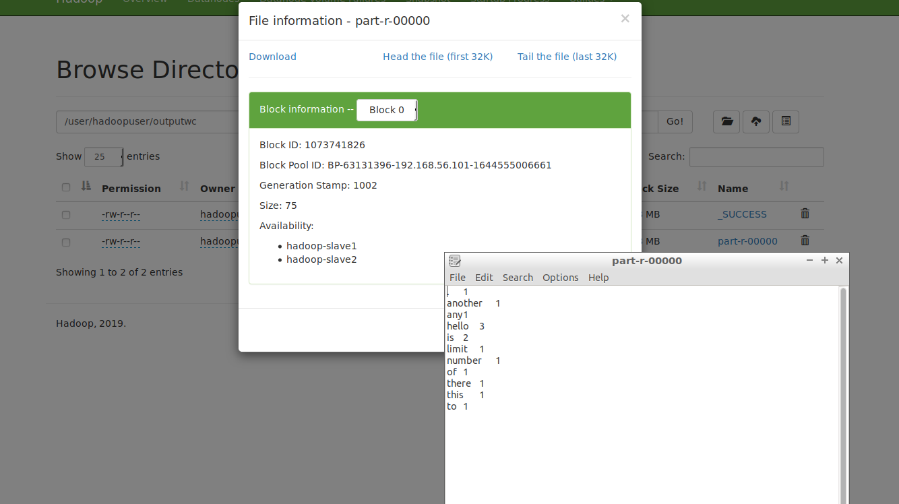
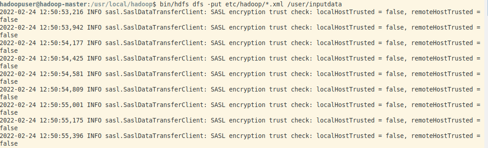
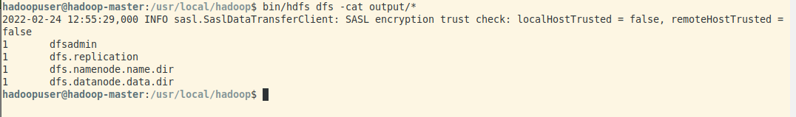

Gyanendra Kr. Shukla
CSE 1
191112040
I followed these steps to compile and run the word count map reduce file on hadoop-
ssh to localhost and switch to hadoopuser using su hadoopuser. 
Start dfs and yarn using bash start-dfs.sh and bash
start-yarn.sh respectively. 
Move the input data to hdfs using bin/hdfs dfs -put /home/admin1/input user/inputdata.
cd to the directory containing the wordcount java file.
To compile the java program, run -
javac -classpath $HADOOP_HOME/share/common/hadoop-common-3.2.1.jar:$HADOOP_HOME/share/hadoop/mapreduce/hadoop-mapreduce-client-core-3.2.1.jar:$HADOOP_HOME/share/hadoop/common/lib/commons-cli-1.2.jar -d /home/hadoopuser/wordcount *.java 6. Three .class files will be created in the same directory. Move them
to a new directory. 7. Convert the .class files to .jar files using
jar -cvf My1WCMapReduce.jar -C /home/hadoopuser/wordcount/wordcountf . 8. cd to hadoop installation directory with cd
/usr/local/hadoop. 9. Execute the jar file with
bin/hadoop jar /home/hadoopuser/wordcountf/My1WCMapReduce.jar My1WCMapReduce /user/inputdata outputwc  10. Checkin the output using bin/hdfs dfs
-cat outputwc/*  11. Checking the output in the hdfs web directory
interface. 
Since all the examples in the hadoop are already in jar format, we can directly execute them.
etc/hadoop/*.xml files to input directory with bin/hdfs dfs -put /etc/hadoop/*
/user/inputdata. bin/hdfs dfs -cat output/* 